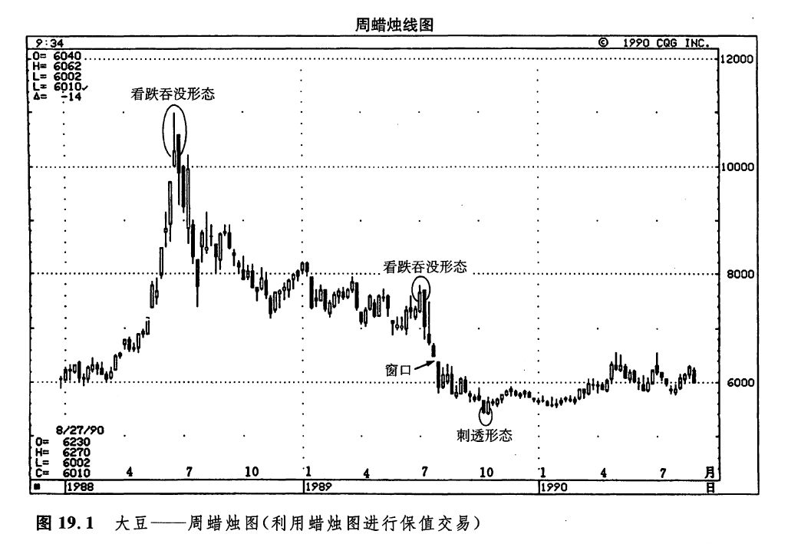
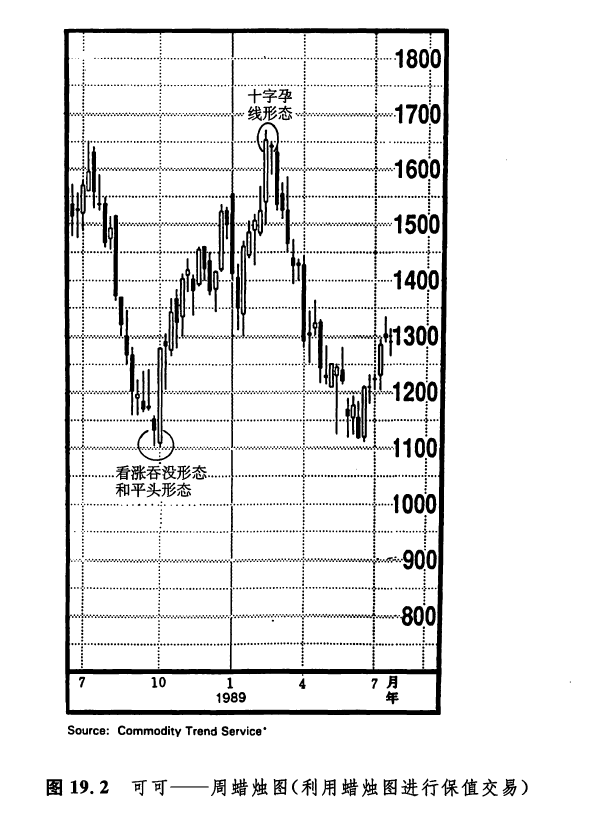
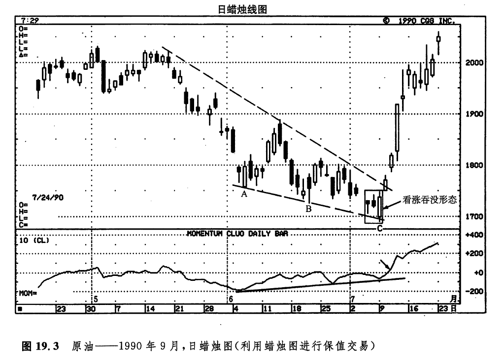

“时刻防范”
过去，当人们需要保值避险的时候，在安排好保值交易的头寸后，往往将之抛到脑后。现在，这样的日子已经一去不返了。由于很容易获得大量的市场信息，保值商的操作手法越来越老练，对技术分析也越来越得心应手。自然，保值商越来越有能力作出合理的决策，选择恰当的时机、恰当的数量，对他们的现货头寸风险进行对冲。归根结底，这些决策的出发点，是以利润为中心的。这一章，我们要探讨如伺在这样的决策过程中充分利用蜡烛图技术，使之成为一门极有价值的辅助工具。这是因为，许多蜡烛图指标均属于趋势反转信号，所以，它们能够提供可贵的线索，帮助我们抉择进行保值交易、取消保值交易，以及调整保值头寸的不同时机。
保值商为了冲抵现有现货头寸的价格风险，或者冲抵可预见的未来现货头寸的价格风险，需要在相应的期货市场或期权市场上建立相反方向的头寸。所谓空头保值商指的是，保值商所承担的现货头寸的价格风险来自价格下跌这一边。举例来说，一位铜冶炼商可能是铜市场的空头保值商，而一位农场主则可能是农作物市场的空头保值商。为了规避由于价格下跌所带来的风险，空头保值商既可以卖出期货合约，也可以买入卖权期权，从而建立相应的空头头寸。一旦市场价格下跌，那么他在现货头寸上蒙受的亏损，从期货头寸或期权头寸的对应利润中至少能够得到部分的补偿。
现货商品的最终用户可能成为一位多头保值商。对于多头保值商来说，基本的现货头寸的风险来自价格上升这一边。举例而言，一位衬衫制造商在生产衬衫的过程中必须买入棉花，那么，他就可能成为棉花市场的多头保值商。为了规避由于价格上涨所引起的风险，这位衬衫制造商既可以通过买入期货合约，也可以通过买入买权期权来建立保值头寸。万一价格上升，那么，虽然他在现货商品市场必须付出较高的代价，但是同时至少能够从期货头寸或期权头寸的盈利中得到部分的补偿。
在很多情况下，如果仅仅在一个价位上建立保值头寸，还不足以完全冲抵相应现货头寸的风险。在这种情况下，保值商可能希望按照一定的比例、梯次，逐步建立保值头寸。如此一来，保值商就会经常碰上下面这个问题：在当前市场状况下，应当对风险总额的多大百分比例进行保值。蜡烛图技术能够帮助我们解决这道难题。通过研究以下列举的各个实例，您就能够从中体味到，如何借助蜡烛图来取得丰富的线索，从而决应何时应当调整现货头寸的保值比例。对于实行100%保值的保值商来说，蜡烛图技术也是实用的。
举个例子，假定您是一位种植玉米的农场主，当前玉米市场的趋势正与您的现货头寸方向相反（就是说，玉米价格正在下跌）。这就意味着，作为一个空头保值商，您的期货保值头寸是盈利的。如果市场上出现了一个坚挺的看涨蜡烛图反转形态，并且您确信价格即将上涨，那么，您也许打算平回一部分保值头寸、减小保值比例。在某些情况下，及时了结一个盈利的保值头寸也许有助于改善当前的现金状况。不过话说回来，绝不可以把保值头寸视为一种创造利润的市场策略。
如图19.1所示，1988年该市场发生了一轮爆炸式的上冲行情，价格从6美元飙升到11美元，几乎翻了一番。1988年年中，在这场上涨行情的顶部附近，蜡烛图给出了一个反转信号，即图示的看跌吞没形态。如果我们呈一个顶部反转形态，根据西方理论，在这个顶部反转形态中，既要求第二根蜡烛线为当前趋势创出新高，也要求它的收市价低于前一周的收市价。但是，该吞没形态第二天的黑色蜡烛线并没有形成新高水平。于是，从西方观点看，这不属于顶部反转形态：而从蜡烛图来看，却是一个顶部反转形态。对于种植大豆的农场主来说，当这个看跌的吞没形态出现时，可以利用它作为警告信号，建立一个空头保值头寸，或者在没有对现货头寸进行完全保值的情况下，增加保值的百分比例。

1989年，又有一个看跌吞没形态警示着市场顶部的到来（在这一例中，如果我们采用西方的技术分析工具，也不会把它看成一个顶部反转形态）。空头保值商可以利用这个机会，建立保值头寸。几周以后出现的窗口，是另一个看跌的蜡烛图信号。这个信号告诉空头保值商，增加他们持有的空头保值头寸（如果他们还没有100%保值的话。10月里形成了一个看涨的刺透形态，我们可以利用这一信号了结一部分空头保值头寸，减少保值比例。对于寻找机会设立多头保值头寸的人来说，可以以这个刺透形态为信号，建立保值头寸。
如图19.2所示，在1988年9月的最后一周，以及在10月的头一周，市场上集中发生了一群看涨的蜡烛图信号。其中最显眼的，是一个看涨吞没形态。这两个星期同时也组成了一个平头底部形态。另外，其中的白色蜡烛线是一根坚挺的捉腰带线，并且它的收市价位于最高点。这根白色蜡烛线还一口气向上吞没了之前5根蜡烛线。对于多头保值商来说，这是一个很好的信号，既可以借此设立保值头寸，也可以增大现有的保值头寸。

在1989年初，出现了一个十字孕线形态（这是一种重要的反转信号），多头保值者不妨据此减小保值比例，平回一部分保值头才。另一方面，这个十字孕线形态是由一根长长的白色蜡烛线和一根十字线组成的，这一事实可能意味着市场已经陷入了困境。正如我们在第八章中所讨论的，出现在一根长长的白色实体之后的十字线，常常是市场顶部的标志。
图19.3所示为原油市场。本例探讨了该市场的保值商，如何通过蜡烛图信号来获得一个及早的底部反转信号，然后再利用西方的技术分析工具对之加以验证，进而增持多头保值头寸。第一个尝试性的底部反转线索，出自7月5日的一根锤子线。考虑到这根锤子线从前一天的最低点向下跳空，我们就不应当草率地视之为看涨信号，除非在今后的几天中还有其他看涨指标对它进行了验证。下一个线索，是图示的看涨吞没形态，它为这根锤子线提供了验证信号。与此同时，这个吞没形态本身也是一个非常重要的底部反转信号。这是因为，其中7月9日的白色蜡烛线不只向上吞没了前一根蜡烛线，而是吞没了前两根蜡烛线。在这个时刻，原油市场的最终用户（即多头保值商）应当郑重地考虑是否建立保值头寸，或者增持已有的保值头寸。

接下来的一条线索是，点A、B、C所示的价格低点，没有得到下半图的动力指数的验证。这就揭示出如下事实：价格下跌的速度正在放缓（也就是说，市场向下的动力正在减退）。
上面所列举的各项理由已经非常充分地预示，价格即将向上反弹。但是，本例还有其他额外的特征。紧接着上述底部反转信号，动力指数向上穿越零钱，进入了正值区（请看箭头所指处）；就在同一时刻，根据传统的西方技术分析理论，图示的下降模形也向上突破了上边界。根据下降模形形态的理论，下一轮上涨行情的价格目标应该在棋形的起点处。对于这个问题，取决于您如何看待这个模形形态的起点。其价格目标既可能设在6月的高点，即19美元的水平上下，也可能设在5月18日的高点，即20美元附近。当市场向上突破这个模形形态时，我们应当增持多头保值头寸。
从本例中我们可以看到，蜡烛图技术能够比西方技术分析工具更早地发出趋势反转警告信号。此处我们还可以看到，将蜡烛图技术同西方的技术分析方法结合起来，恰似如虎添翼一般，能够创造出一种强大的合成工具。相互验证的技术分析信号越多，那么准确地揭示趋势变化的把握也就越大。
下一篇：第二十章 我是如何应用蜡烛图的
上一篇：期权交易与蜡烛图
copyright @ 2018 制作：汉钛电线，Hingtak Wire & Cable LLC